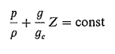

mccabe 단위조작 2
챕터2: 유체역학
유체의 거동은 프로세스 공학에서 일반적으로 중요하며 단위조작의 기본 분야 중 하나이다. 유체를 잘 알아야 관과 펌프와 같은 프로세스 장치에서 유체 이동에 관한 문제를 제대로 다루고, 열흐름, 확산 및 물질 전달에 기초한 분리 조작을 공부할 수 있다.
유체의 거동을 다루는 분야는 유체역학이다. 유체+응력을 받는 고체까지 다루는 넓은 분야는 연속체역학이라 한다. 단위조작에서 필요한 것은 유체역학 중 전단응력이 존재하지 않는 평형 상태의 유체를 다루는 유체정역학과 일부가 상대적으로 움직이는 유체를 다루는 유체동역학의 두 분야로 유체역학을 나눈다.
섹션2는 9장까지 구성되어있는데, 각각은 다음과 같다.
2장:유체 정역학과 기본 응용
3장:유체 흐름에서 나타나는 중요 현상 검토
4장:유체 흐름의 정량적 기본 법칙과 식을 다룸
5장:관 속에 흐르는 비압축성 유체
6장:압축성 유체
7장:유체 속에 잠긴 고체를 지나는 흐름
8장:유체 수송 장치와 유량의 측정 및 조절에 관한 공학적 과제
9장:혼합, 교반, 분산 조작
2장:유체 정역학과 기본 응용
유체는 변형에 저항하지 못하는 물질, 비압축성 VS 압축성
유체 정역학적 평형 조건

3장:유동현상 (유체 흐름에서 나타나는 중요 현상 검토)
흐르는 유체의 거동은 경계가 미치는 영향에 따라 달라진다. 벽의 영향이 적으면 전단응력이 없어져 비압축성이고 점도가 0인 이상유체의 거동과 비슷해진다. 이러한 이상유체의 흐름을 퍼텐셜 흐름이라고 한다.
퍼텐셜 흐름에는 두 가지 중요한 특성이 있는데
1)흐름 중에는 에디가 생기지 않으며 비회전흐름이다.
2)마찰이 생기지 않는다. 따라서 기계적 에너지가 열로 손실되지 않는다.
반면 벽에 인접한 유체는 경계의 영향을 받아 4가지 중요효과가 나타난다.
1)속도 구배와 전단응력장의 결합
2)난류의 발생
3)경계층의 형성과 성장
4)고체 경계와의 접촉면으로부터의 경계층의 분리